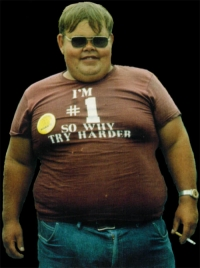

-=[ Owned Bah Hacker Jak ]=-

Well, lil kiddies, I wanted to say hello... once again... I was here, and but now I am gone, I just left my fat ass pic to carry on... heh, /me bustin a rhyme... But 4th of july is coming up I wanted to post a lil something to make it all better...
---Start-How to hack fire and make a colored flame...---
red - strontium nitrate
green - barium nitrate
yellow - sodium nitrate
blue - powdered copper
white- powered magnesium or aluminum
purple - potassium permanganate
---Start-How to hack fire and make a colored flame...---
Now when your make your sexy lil fireworks or smoke bombs, you have a lil color to add to your display... oh yeah... and if you want to make a cute lil smoke bomb, the 2 things you will need is : 6 part zinc powder to 1 part sulfur powder... You should figure it out from there, uh huh¿ erm, someone remind me, next time i will post how to make your own sexy skyrockets or roman candles... to get the girlies of courses... but i'm outie now... mmk...
Props and Luvin to mah niggahs out there,
Devil-C and Perin Aybara777- both of you knowing I could when no one else
thought I could. and being my brothers...
mozy, dr. nuker, subartic, c4ndyman- backing me up, and being by my side when
i would need it...
octane and edoc- you two have helped with with everything from, computers to
life, thanX bros...
And everyone else knows who you all are...